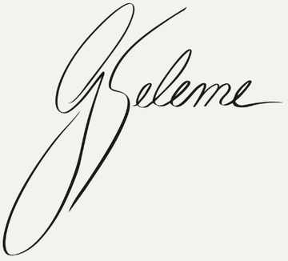
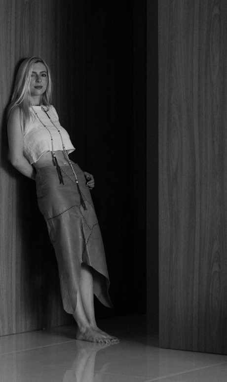

Eu cresci imersa em arte, por pessoas que tinham arte como hobby — pintores, ceramistas, artesãos e uma mãe arquiteta que sempre passou mais tempo criando com as próprias mãos do que de qualquer outra forma.
Aos 14 anos, saí de casa para fazer intercâmbio no Canadá e na Holanda.
Ali, eu vi o mundo e sua vastidão pela primeira vez.
No segundo, eu tive minha primeira experiência mais aprofundada com cerâmica e descobri o transe e a profundidade a que a arte pode nos guiar.
Eu sempre flertei com arte, usei a arte, mas levei muito tempo para enxergá-la como um caminho meu.
No início da vida adulta, durante a graduação de arquitetura, eu recorri a ela como forma de terapia, conexão e, principalmente, expressão.
Esse caminho,
Essas peças,
São um reflexo de transformação,
De desenvolvimento.
Aqui, eu testo, eu estrago, eu conserto e desenvolvo.
Tudo é um reflexo do tempo e de emoções.
Um reflexo da vida.

Ateliê · Balneário Camboriú